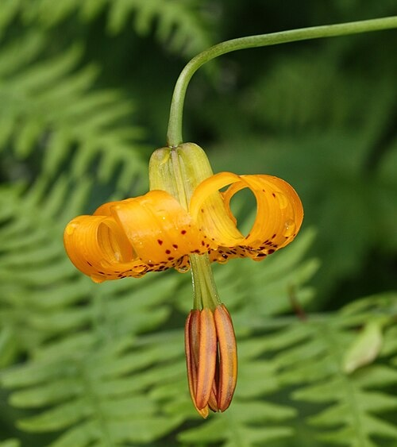
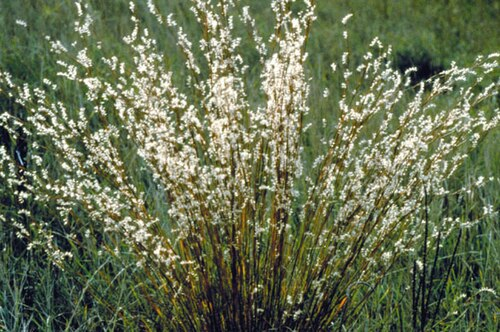
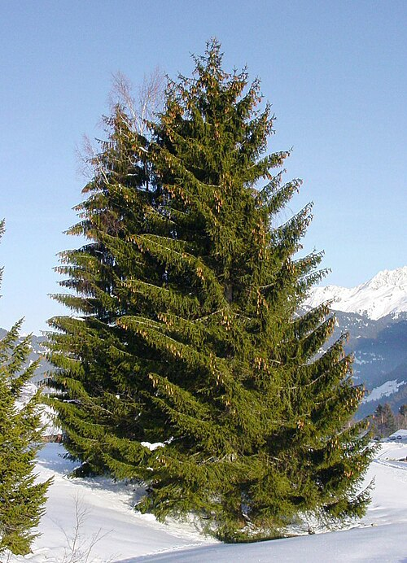
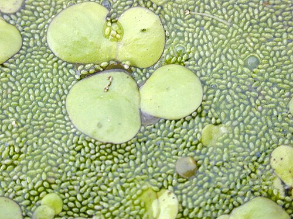
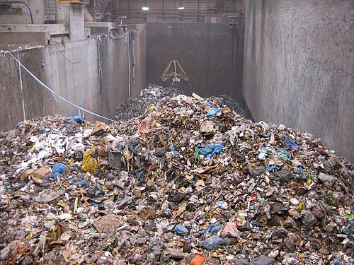
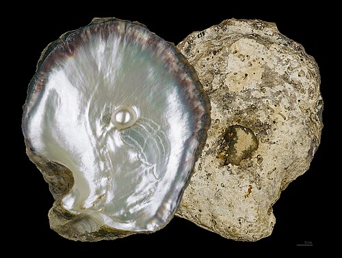

Tiger lily (lilium columbianum!) In addition to being beautiful, lilium columbianum can serve culinary purposes and has been traditionally gathered and used as flavoring by the Coast Salish, Nuu-chah-nulth, and other indigenous groups of the Pacific Northwest.

Little bluestem (schizachyrium scoparium!) Little bluestem is a prairie grass most commonly found in the US midwest and the Texas grasslands.

Spruce trees! A member of the genus picea, spruce trees are identifiable by their pulvini -- small peg-like structures to which the needles attach that remain on the branch after needle shedding.

Duckweed (lemnoideae!) Duckweed, also called water lentils, free float on the surface of fresh water and wetlands. They were identified by NASA's Caves of Mars project as a potential crop for extraterrestrial cultivation.

The United States generates 292.4 million tons of municipal solid waste each year, averaging about 4.9 pounds of trash per person daily (US EPA.)

Oysters play a valuable role in an aquatic ecosystem, filtering water and providing habitat for marine life like fish, crabs, and small invertebrates. Due to overfishing and habitat loss, oyster populations have declined markedly in some areas, like the Chesapeake Bay where population was down 90% until The Chesapeake Bay Foundation and other groups took on their restoration efforts. According to the Chesapeake Oyster Alliance, by 2022, 2.5 billion new oysters were introduced to the bay!
In 2007, the African Union launched an initiative to build the Great Green Wall, a massive tree planting project that would cross 22 different countries, restore 100 million hectares of deforested or degraded land, and sequester 250 million tons of carbon. It's due to be completed by 2030.
...